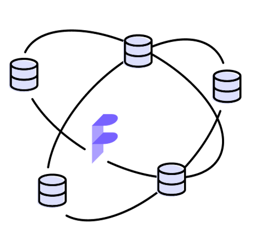
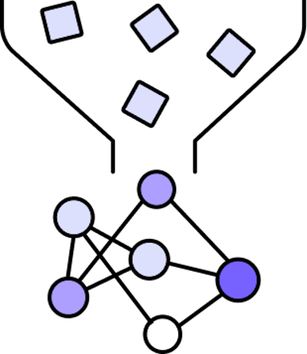
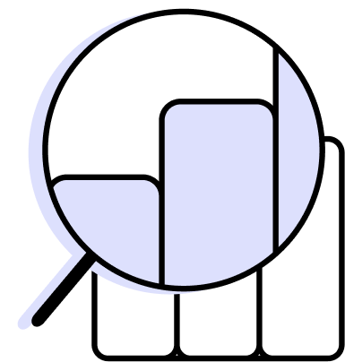
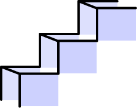

Fast and Distributed
Python Query Engine
Daft is a framework for ETL, analytics and ML/AI at scale. Its familiar
Python Dataframe API is built to outperform Spark in performance and ease
of use.
USE CASES
Daft provides a familar and easy to use
Python dataframe API for:
Daft exposes a powerful type system that can represent complex
datatypes such as JSON, URLs, Images and Tensors. Operations can
be expressed using Daft's Expressions API, allowing for easy
manipulation of these complex datatypes that is then lazily
executed on Daft's blazing fast Rust core engine.
1 import daft
2
3 df = daft.from_pydict(
4 {
5 "image_urls": ["a", "b", "c"],
6 }
7 )
8
9 df = df.with_column(
10 "data",
11 df["image_urls"].url.download()
12 )
13 df = df.with_column(
14 "images",
15 df["data"].image.decode()
16 )
17 df.show()
Daft supports large-scale tabular batch data processing with its
familiar DataFrame interface. Its Rust I/O engine is heavily
tuned for cloud based workloads, and boasts record-setting
efficiency when reading and writing data in formats such as
Apache Parquet. Daft also applies powerful optimizations with
its built in query optimizer, ensuring that your query is
executed efficiently when run on data at terabyte-scales.

1 import daft
2
3 df = daft.read_parquet(
4 "s3://source-bucket/**/*.parquet"
5 )
6 df = df.sort("foo")
7
8 df.write_parquet("s3://destination-bucket/")
Daft provides tight integration with frameworks such as Pytorch
and Ray to efficiently ingest data into your data-hungry ML
model training workloads. Its blazing fast I/O and kernels
allows for maximizing GPU utilization by pipelining your data
through downloading, pre-processing and random per-epoch
shuffling. Daft also leverages Apache Arrow memory formats,
allowing for zero-copy data transfer between dataloading and
model training.

1 import daft
2
3 df = daft.read_json("s3://my-json-files/**/*.json")
4 df = df.with_column(
5 "features",
6 run_featurization(df["data"])
7 )
8
9 pytorch_dataset = df.to_torch_iter_dataset()
Daft is built for usage from interactive environments such as
Jupyter notebooks. This lets you perform interactive
explorations of your data with just your local development
environment. Daft's expressions API also lets you perform
operations such as groupby, aggregations and joins.

1 import daft
2
3 df = daft.from_pydict(
4 {
5 "A": ["foo", "bar", "foo", "bar"],
6 "B": [i for i in range(4)],
7 }
8 )
9 grouped_df = df.groupby(df["A"])
10 aggregated_df = grouped_df.agg(
11 [
12 (grouped_df["B"].alias("B_sum"), "sum"),
13 ]
14 )
16 aggregated_df.collect()
Daft exposes a powerful type system that can represent complex
datatypes such as JSON, URLs, Images and Tensors. Operations can
be expressed using Daft's Expressions API, allowing for easy
manipulation of these complex datatypes that is then lazily
executed on Daft's blazing fast Rust core engine.
1 import daft
2
3 df = daft.from_pydict({
4 "image_urls": ["a", "b", "c"],
5 })
6
7 df = df.with_column("data", df["image_urls"].url.download())
8 df = df.with_column("images", df["data"].image.decode())
9
10 df.show()
Daft supports large-scale tabular batch data processing with its
familiar DataFrame interface. Its Rust I/O engine is heavily tuned
for cloud based workloads, and boasts record-setting efficiency
when reading and writing data in formats such as Apache Parquet.
Daft also applies powerful optimizations with its built in query
optimizer, ensuring that your query is executed efficiently when
run on data at terabyte-scales.
1 import daft
2
3 df = daft.read_parquet("s3://source-bucket/**/*.parquet")
4 df = df.sort("foo")
5
6 df.write_parquet("s3://destination-bucket/")
Daft provides tight integration with frameworks such as Pytorch
and Ray to efficiently ingest data into your data-hungry ML model
training workloads. Its blazing fast I/O and kernels allows for
maximizing GPU utilization by pipelining your data through
downloading, pre-processing and random per-epoch shuffling. Daft
also leverages Apache Arrow memory formats, allowing for zero-copy
data transfer between dataloading and model training.
1 import daft
2
3 df = daft.read_json("s3://my-json-files/**/*.json")
4 df = df.with_column(
5 "features",
6 run_featurization(df["data"])
7 )
8
9 pytorch_dataset = df.to_torch_iter_dataset()
Daft is built for usage from interactive environments such as
Jupyter notebooks. This lets you perform interactive explorations
of your data with just your local development environment. Daft's
expressions API also lets you perform operations such as groupby,
aggregations and joins.
1 import daft
2
3 df = daft.from_pydict(
4 {
5 "A": ["foo", "bar", "foo", "bar"],
6 "B": [i for i in range(4)],
7 }
8 )
9 grouped_df = df.groupby(df["A"])
10 aggregated_df = grouped_df.agg(
11 [
12 (grouped_df["B"].alias("B_sum"), "sum"),
13 ]
14 )
16 aggregated_df.collect()
ECOSYSTEM
Integrations? We'll build it.
Data Science and Machine Learning
Storage and Infrastructure
Integrations?
We'll build it.

Take the next step with an easy tutorial.
MNIST Digit Classification
Use a simple deep learning model to run classification on the
MNIST image dataset.
see tutorial
Running LLMs on the Red Pajamas Dataset
Perform similarity a search on Stack Exchange questions using
language models and embeddings.
see tutorial
Querying Images with UDFs
Query the Open Images dataset to retrieve the top N “reddest”
images using Numpy and Pillow inside Daft UDFs.
see tutorial
Generate images from text prompts using a deep learning model
(Mini DALL-E) and Daft UDFs
see tutorial